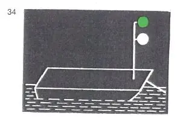
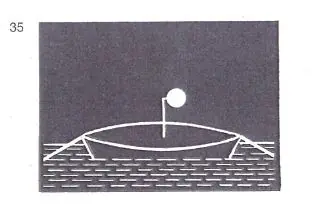
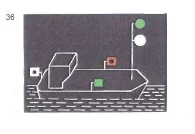

§ 3.16 Bezeichnung der Fähren in Fahrt (Anlage 3 Bild 34, 35, 36)
Rheinschiffahrtspolizeiverordnung
1. | Nicht frei fahrende Fähren in Fahrt müssen bei Nacht führen: | ||
a) | ein von allen Seiten sichtbares weißes helles Licht mindestens 5,00 m über der Ebene der Einsenkungsmarken; die Höhe darf jedoch verringert werden, wenn die Länge der Fähre 15,00 m nicht überschreitet; |  | |
b) | ein von allen Seiten sichtbares grünes helles Licht etwa 1,00 m über dem Licht nach Buchstabe a. | ||
2. | Bei Gierfähren am Längsseil in Fahrt muß bei Nacht der oberste Buchtnachen oder Döpper mit einem weißen hellen Licht mindestens 3,00 m über dem Wasser versehen sein. |  | |
3. | Frei fahrende Fähren in Fahrt müssen bei Nacht führen: | ||
a) | die Lichter nach Nummer 1; |  | |
b) | die Lichter nach § 3.08 Nr. 1 Buchstabe b und c. |